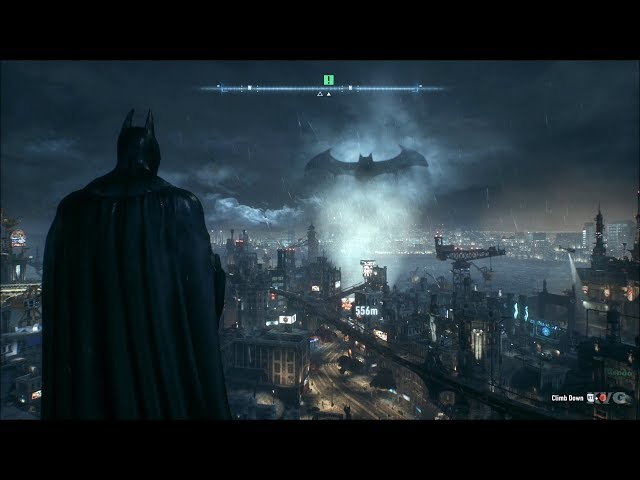

Batman: Arkham Knight é o encerramento triunfal de uma franquia revolucionária que redefiniu para sempre a fórmula de como criar um jogo de super-herói de sucesso. Sendo uma das sagas mais icônicas da indústria, este título pega todos os elementos aclamados de seus antecessores e os eleva ao nível máximo. Impressiona o fato de ter sido lançado em 2015 e, ainda assim, entregar gráficos e uma jogabilidade que superam muitos títulos atuais. Embora clássicos como Arkham City rivalizem em certos aspectos narrativos, Arkham Knight se consolida como a experiência definitiva do Batman: refinado, visualmente deslumbrante, com uma história envolvente e a mecânica de combate mais fluida e inovadora já feita.Sem dúvidas, divide o lugar de melhores jogos lançados em 2015 juntamente com The Witcher 3.
As mecânicas da franquia Arkham foram tão inovadoras que serviram de base para o desenvolvimento do jogo Spider-Man Ps4 que utiliza de várias mecânicas e estratégias de gameplay dos jogos do Batman.Sem dúvidas, a franquia Arkham marcou seu legado para o mundo dos games, trazendo inovações marcantes
A franquia Arkham se destaca brilhantemente pela fidelidade e compreensão profunda da essência do Batman. Ao contrário de muitas adaptações cinematográficas recentes, os jogos conseguem traduzir o universo dos quadrinhos de maneira impecável, respeitando a psicologia do herói, seus dilemas morais e seu status como o maior detetive do mundo. A narrativa não apenas adapta grandes arcos das HQs, mas o faz com uma maestria técnica e de roteiro que eleva o material original. Combinando essa excelência narrativa com gráficos à frente de seu tempo, combate revolucionário e uma atmosfera imersiva, a saga entrega uma das melhores e mais completas obras do Batman em qualquer mídia, sendo capaz de transformar qualquer jogador em um fã instantâneo do Cavaleiro das Trevas.
É impossível abordar Batman: Arkham Knight sem destacar sua revolução gráfica. Lançado em 2015 para a oitava geração de consoles, o título extraiu o potencial máximo do hardware da época e entregou um patamar visual impressionante. Mesmo anos após o seu lançamento, o jogo se mantém surpreendentemente atual, superando em diversos aspectos técnicos muitos títulos contemporâneos. A fidelidade das texturas, a modelagem impecável dos personagens e o trabalho de iluminação constroem a atmosfera perfeita de Gotham City, capturando com maestria a essência de uma noite chuvosa e sombria na pele do Cavaleiro das Trevas. No PC, o desempenho visual atinge um nível ainda mais espetacular com o suporte às tecnologias exclusivas da NVIDIA, consolidando o jogo como um verdadeiro triunfo técnico e de direção de arte.

A trilha sonora de Batman: Arkham Knight cumpre um papel impecável ao construir a atmosfera de tensão e suspense do jogo. Embora siga uma proposta diferente das composições de The Legend of Zelda e The Witcher 3, ela figura entre as trilhas sonoras mais marcantes já produzidas para o universo do herói. As músicas capturam perfeitamente a essência do Cavaleiro das Trevas, utilizando arranjos e instrumentos que evocam a sensação de um predador caçando nas sombras. Essa sonoridade calculada reforça a aura de medo que o Batman desperta nos criminosos de Gotham, mantendo o elevado padrão de qualidade que caracteriza o título em todos os seus aspectos.
Nota no Metacritic: 87 / 100 (Generally Favorable) — Embora apresente uma pontuação ligeiramente inferior aos aclamados Batman: Arkham Asylum (92) e Batman: Arkham City (96), a nota de Arkham Knight reflete a altíssima exigência construída pela própria franquia. Enquanto os títulos anteriores foram marcos históricos de inovação no design de níveis e narrativa, o capítulo final foi consagrado pela crítica por levar o hardware ao limite com seus gráficos revolucionários, expandir o sistema de combate Freeflow e entregar uma Gotham de escala inédita. A pequena variação na nota em relação aos antecessores deu-se principalmente pelo uso ostensivo do Batmóvel, mas o consenso geral reafirma a obra como um fechamento monumental e digno para uma das trilogias mais prestigiadas dos videogames.